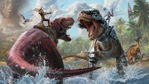
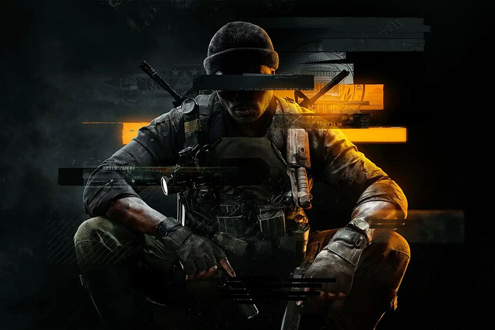
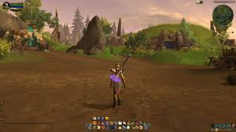

Los videojuegos son básicamente una forma de entretenimiento digital donde podemos interactuar con una historia o un reto a través de una consola,
una computadora o incluso un celular. No solo sirven para divertirnos, también nos permiten convivir con otras personas, aprender cosas nuevas y vivir
experiencias que en la vida real serían imposibles.
Hay varios tipos de videojuegos que me gustan como los shooters, survivals, MMORPG y alguno que otro que no se como clasificarlos.
Me gusta jugar videojuegos de preferencia que tengan modos copetitivo ya que siempre me ha gustado que haya algo por lo que buscar ganar.
Siento que los videojuegos son en gran parte una buena manera de distraccion y te ayudan aveces a pensar(dependiendo lo que juegues), pero aun asi no hay
que perderse en ellos por que pueden llegar a ser una gran perdida de tiempo.
CATEGORIAS DE VIDEOJUEGOS
Survivals
"Survivals" se refiere comúnmente a los videojuegos del género survival, donde el jugador debe sobrevivir en un mundo hostil,
recolectar recursos, fabricar objetos y construir refugios, gestionando la vida, el hambre, la sed y otras métricas para perdurar el mayor tiempo
posible, a menudo enfrentándose a otros jugadores o a peligros ambientales.

Shooters
"Shooters" son videojuegos enfocados principalmente en el combate con armas de fuego.
En este género el jugador suele enfrentarse a enemigos controlados por la computadora o por otros jugadores,
ya sea en solitario o en equipos. Los shooters se caracterizan por su acción rápida, puntería precisa y
reflejos, y pueden jugarse en primera persona (FPS) o en tercera persona (TPS), ofreciendo experiencias
intensas en distintos escenarios de guerra, futuristas o de fantasía.

MMORPG
"MMORPG" significa Massively Multiplayer Online Role-Playing Game,
es decir, juegos de rol en línea multijugador masivos. En este género los jugadores crean
y desarrollan un personaje en un mundo virtual abierto, interactuando con miles de personas
al mismo tiempo. La experiencia se centra en explorar, completar misiones, subir de nivel,
conseguir equipamiento y participar en batallas o eventos comunitarios, fomentando tanto la
competencia como la cooperación entre jugadores.
